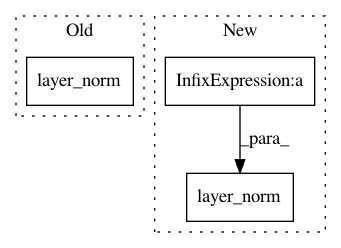

f81e27a5cbe72ec3bf22f12d5a9ea60008bb8f1c,allennlp/modules/seq2seq_encoders/stacked_self_attention.py,StackedSelfAttentionEncoder,forward,#StackedSelfAttentionEncoder#Any#Any#,117
Before Change
// layers, so we exclude it here.
feedforward_output += cached_input
// shape (batch_size, sequence_length, hidden_dim)
attention_output = attention(layer_norm(feedforward_output), mask)
output = self.dropout(attention_output) + feedforward_output
return self._output_layer_norm(output)
After Change
if feedforward_output.size() == cached_input.size():
// First layer might have the wrong size for highway
// layers, so we exclude it here.
feedforward_output = feedforward_layer_norm(feedforward_output + cached_input)
// shape (batch_size, sequence_length, hidden_dim)
attention_output = attention(feedforward_output, mask)
output = layer_norm(self.dropout(attention_output) + feedforward_output)
return output
@classmethod
In pattern: SUPERPATTERN
Frequency: 3
Non-data size: 3
Instances
Project Name: allenai/allennlp
Commit Name: f81e27a5cbe72ec3bf22f12d5a9ea60008bb8f1c
Time: 2018-03-01
Author: markn@allenai.org
File Name: allennlp/modules/seq2seq_encoders/stacked_self_attention.py
Class Name: StackedSelfAttentionEncoder
Method Name: forward
Project Name: NVIDIA/OpenSeq2Seq
Commit Name: 59dca319d547dcb785cb7f6ef8e5230e09d5dc90
Time: 2018-08-09
Author: vnoroozi@nvidia.com
File Name: open_seq2seq/parts/convs2s/ffn_wn_layer.py
Class Name: FeedFowardNetworkNormalized
Method Name: call
Project Name: NVIDIA/OpenSeq2Seq
Commit Name: 59dca319d547dcb785cb7f6ef8e5230e09d5dc90
Time: 2018-08-09
Author: vnoroozi@nvidia.com
File Name: open_seq2seq/parts/convs2s/conv_wn_layer.py
Class Name: Conv1DNetworkNormalized
Method Name: call